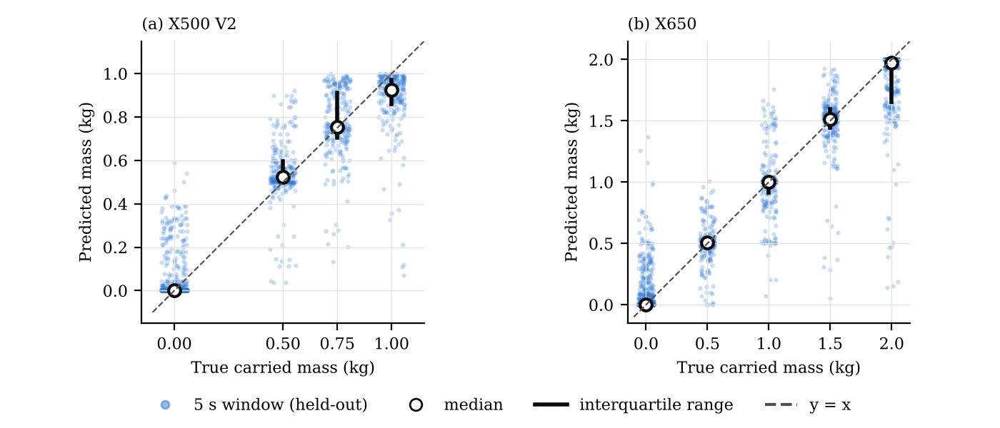
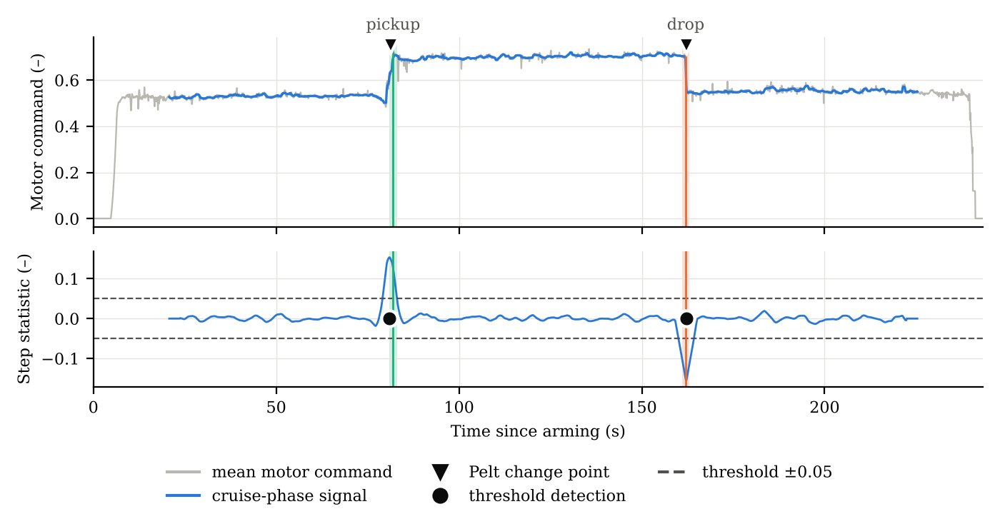

Runnable Devkit
The scripts read the DroneLog v1.1 release (log/ and metadata/). One command regenerates every result table of the revised paper:
venv/bin/python run_all.py --data <dataset_root> --out outputsor task by task:
venv/bin/python scripts/task1_frame_classification.py --data <dataset_root> --out outputs
venv/bin/python scripts/task2_payload_classification.py --data <dataset_root> --out outputs
venv/bin/python scripts/task3_mass_regression.py --data <dataset_root> --out outputs
venv/bin/python scripts/task5_event_detection.py --data <dataset_root> --out outputsBenchmark Tasks
Task 1: Platform identification
Identify which of five vehicles flew from IMU-window features. Random Forest accuracy (5 s): 0.959.
Task 2: Payload state and scenario
Loaded or unloaded per window (RF 0.966); scenario per flight (RF 0.856).
Task 3: Mass estimation
Carried mass per platform, with per-mass errors and held-out masses.
Task 4: Navigation (v1.0)
Kept from v1.0 for reference; not part of the revised paper.
Task 5: Event detection
Pickup/drop detection from the cruise-phase motor command, 2 s tolerance.
Results
Mean ± s.d. over 10 repetitions of flight-grouped cross-validation, DroneLog v1.1.
Task 1: Platform Identification
| Window | Model | Accuracy | Macro-F1 |
|---|---|---|---|
| 5 s | Random Forest | 0.959 ± 0.005 | 0.958 ± 0.005 |
| 5 s | SVM | 0.927 ± 0.004 | 0.922 ± 0.003 |
| 5 s | KNN | 0.897 ± 0.004 | 0.892 ± 0.005 |
| 5 s | Logistic Regression | 0.919 ± 0.004 | 0.914 ± 0.005 |
| 5 s | Metadata only (RF) | 1.000 ± 0.000 | 1.000 ± 0.000 |
| 5 s | Random Forest, resampled to 200 Hz | 0.956 ± 0.006 | 0.955 ± 0.006 |
Task 2: Payload State
| Model (5 s windows) | Accuracy | Macro-F1 |
|---|---|---|
| Random Forest | 0.966 ± 0.004 | 0.966 ± 0.004 |
| SVM | 0.965 ± 0.002 | 0.965 ± 0.002 |
| KNN | 0.950 ± 0.002 | 0.949 ± 0.002 |
| Logistic Regression | 0.931 ± 0.006 | 0.930 ± 0.006 |
| Metadata only (RF) | 0.633 ± 0.020 | 0.623 ± 0.020 |
| RF, IMU only | 0.943 ± 0.004 | 0.943 ± 0.004 |
| Random Forest, train t1 → test t2/t3 | 0.955 | 0.954 |
Task 2: Flight-Level Scenario
| Model | Accuracy | Macro-F1 |
|---|---|---|
| Random Forest | 0.856 ± 0.014 | 0.855 ± 0.013 |
| SVM | 0.693 ± 0.013 | 0.691 ± 0.014 |
| KNN | 0.577 ± 0.031 | 0.583 ± 0.031 |
| Logistic Regression | 0.793 ± 0.036 | 0.797 ± 0.035 |
| Metadata only (RF) | 0.542 ± 0.043 | 0.534 ± 0.044 |
| Random Forest, train t1 → test t2/t3 | 0.814 | 0.819 |
Task 3: Payload-Mass Estimation
| Platform | Model | MAE kg | RMSE kg | R2 |
|---|---|---|---|---|
| x500v2 | Random Forest | 0.069 ± 0.002 | 0.132 | 0.889 |
| x500v2 | Ridge | 0.130 ± 0.003 | 0.184 | 0.783 |
| x500v2 | Mean predictor | 0.368 | 0.394 | 0.000 |
| x500v2 | Metadata only (RF) | 0.364 ± 0.009 | 0.416 | -0.114 |
| x500v2 | Random Forest, train t1 → test t2/t3 | 0.096 | 0.158 | 0.844 |
| x650 | Random Forest | 0.102 ± 0.005 | 0.225 | 0.908 |
| x650 | Ridge | 0.219 ± 0.003 | 0.326 | 0.808 |
| x650 | Mean predictor | 0.658 | 0.744 | 0.000 |
| x650 | Metadata only (RF) | 0.651 ± 0.024 | 0.807 | -0.177 |
| x650 | Random Forest, train t1 → test t2/t3 | 0.149 | 0.265 | 0.868 |

Task 5: Pickup/Drop Event Detection
| Detector | Event | Precision | Recall | F1 | False alarms / min | Median abs latency s |
|---|---|---|---|---|---|---|
| Thresholded change-point | pickup | 0.93 | 0.96 | 0.95 | 0.016 | 0.64 |
| Thresholded change-point | drop | 0.84 | 0.96 | 0.90 | 0.041 | 0.34 |
| Pelt change-point | pickup | 0.93 | 0.90 | 0.91 | 0.016 | 0.65 |
| Pelt change-point | drop | 0.90 | 0.94 | 0.92 | 0.024 | 0.34 |

Limitations
Each frame size is a single vehicle, so Task 1 identifies the platform; it cannot separate frame geometry from controller, IMU and firmware.
Pickup and drop times are manual labels (seconds after arming) with about ±1 s uncertainty.
Task 4 uses onboard GPS-level truth, which the PX4 EKF also fuses; it is kept from v1.0 for reference only.